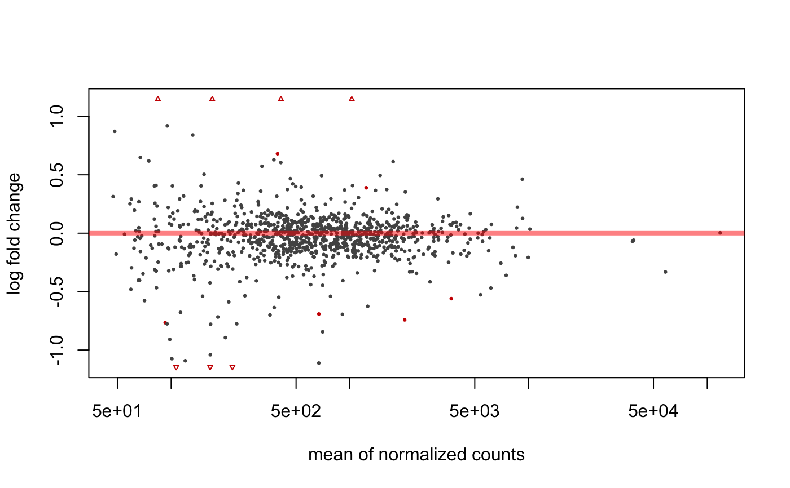
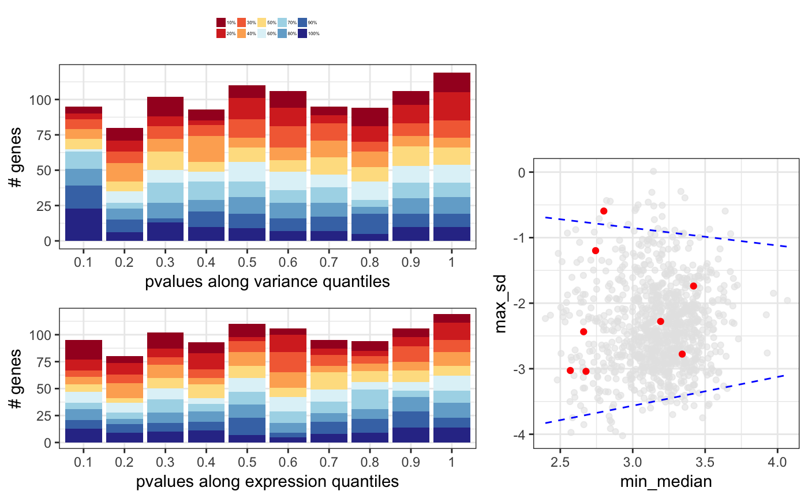
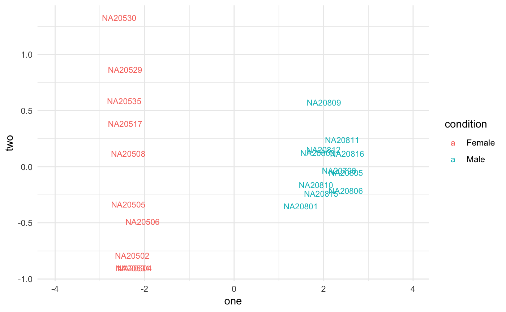

degResults.RdComplete report from DESeq2 analysis
degResults(res = NULL, dds, rlogMat = NULL, name, org = NULL, FDR = 0.05, do_go = FALSE, FC = 0.1, group = "condition", xs = "time", path_results = ".", contrast = NULL)
| res | output from |
|---|---|
| dds |
|
| rlogMat | matrix from |
| name | string to identify results |
| org | an organism annotation object, like org.Mm.eg.db. NULL if you want to skip this step. |
| FDR | int cutoff for false discovery rate. |
| do_go | boolean if GO enrichment is done. |
| FC | int cutoff for log2 fold change. |
| group | string column name in colData(dds) that separates samples in meaninful groups. |
| xs | string column name in colData(dss) that will be used as X axes in plots (i.e time) |
| path_results | character path where files are stored. NULL if you don't want to save any file. |
| contrast | list with character vector indicating the fold change values from different comparisons to add to the output table. |
ggplot2 object
data(humanGender) library(DESeq2) idx <- c(1:10, 75:85) dse <- DESeqDataSetFromMatrix(assays(humanGender)[[1]][1:1000, idx], colData(humanGender)[idx,], design=~group) dse <- DESeq(dse)#>#>#>#>#>#>#> #> #>#>#>res <- degResults(dds = dse, name = "test", org = NULL, do_go = FALSE, group = "group", xs = "group", path_results = NULL)#>#>#> ## Comparison: test {.tabset} #> #> #> <br>out of 1000 with nonzero total read count<br>adjusted p-value < 0.1<br>LFC > 0 (up) : 6, 0.6%<br>LFC < 0 (down) : 7, 0.7%<br>outliers [1] : 0, 0%<br>low counts [2] : 0, 0%<br>(mean count < 47)<br>[1] see 'cooksCutoff' argument of ?results<br>[2] see 'independentFiltering' argument of ?results<br><br>NULL #> #> #> Differential expression file at: test_de.csv #> #> Normalized counts matrix file at: test_log2_counts.csv #> #> ### MA plot plot #>#> #> #> ### Volcano plot #> #> #> #> ### QC for DE genes#> #> #> ### Most significants, FDR< 0.05 and log2FC > 0.1 : 10#> #> #> #> ### Plots top 9 most significants#>#>#> #> #> #> ### Top DE table #> #> #> #> | | baseMean| log2FoldChange| lfcSE| stat| pvalue| padj| absMaxLog2FC| #> |:---------------|----------:|--------------:|---------:|---------:|---------:|---------:|------------:| #> |ENSG00000067048 | 1025.03783| 10.1571705| 0.4233146| 23.994380| 0.0000000| 0.0000000| 10.1571705| #> |ENSG00000012817 | 411.54387| 9.2394007| 0.4237379| 21.804517| 0.0000000| 0.0000000| 9.2394007| #> |ENSG00000067646 | 169.81477| 10.1874916| 0.6579432| 15.483847| 0.0000000| 0.0000000| 10.1874916| #> |ENSG00000005889 | 670.86191| -0.6919265| 0.1314523| -5.263708| 0.0000001| 0.0000353| 0.6919265| #> |ENSG00000006757 | 92.66111| -0.7666012| 0.1611520| -4.757006| 0.0000020| 0.0003930| 0.7666012| #> |ENSG00000073282 | 220.15603| -1.8685615| 0.4206120| -4.442482| 0.0000089| 0.0014821| 1.8685615| #> |ENSG00000005302 | 2026.54990| -0.7418952| 0.1763412| -4.207157| 0.0000259| 0.0036943| 0.7418952| #> |ENSG00000005020 | 1233.86316| 0.3888370| 0.0952312| 4.083085| 0.0000444| 0.0055552| 0.3888370| #> |ENSG00000003400 | 393.62677| 0.6803243| 0.1766475| 3.851310| 0.0001175| 0.0130542| 0.6803243| #> |ENSG00000069702 | 106.67010| -1.6323189| 0.4585611| -3.559654| 0.0003713| 0.0371343| 1.6323189| #> |ENSG00000010278 | 84.30823| 1.2035871| 0.3554857| 3.385754| 0.0007098| 0.0645300| 1.2035871| #> |ENSG00000023171 | 165.31692| -1.4022259| 0.4236024| -3.310240| 0.0009322| 0.0776799| 1.4022259| #> |ENSG00000072501 | 3694.76013| -0.5604815| 0.1707989| -3.281529| 0.0010325| 0.0794200| 0.5604815| #> |ENSG00000070018 | 119.89049| -1.0921227| 0.3512409| -3.109327| 0.0018751| 0.1339388| 1.0921227| #> |ENSG00000059377 | 131.98111| 0.8405094| 0.2744635| 3.062372| 0.0021959| 0.1463935| 0.8405094| #> |ENSG00000008277 | 377.43955| -0.6368732| 0.2136506| -2.980910| 0.0028739| 0.1796208| 0.6368732| #> |ENSG00000005059 | 479.12528| 0.4225402| 0.1492246| 2.831571| 0.0046320| 0.2289281| 0.4225402| #> |ENSG00000012963 | 1829.21224| 0.2471040| 0.0861859| 2.867104| 0.0041425| 0.2289281| 0.2471040| #> |ENSG00000038427 | 100.87217| -1.0743654| 0.3810269| -2.819658| 0.0048075| 0.2289281| 1.0743654| #> |ENSG00000068079 | 1035.17996| 0.4075632| 0.1415563| 2.879160| 0.0039874| 0.2289281| 0.4075632| #> #>